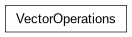

VectorOperations module¶
VectorOperations.py
This module contains utility functions for vector operations.
- Classes:
VectorOperations: Class containing static methods for various vector operations.

VectorOperations.py
This module contains utility functions for vector operations.
VectorOperations: Class containing static methods for various vector operations.